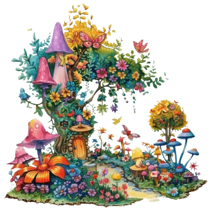

Iona and Amaia stood in the heart of the garden. Magic filled the air, waiting for their choice.
Behind them was the old gate, gently swaying. Ahead was a colourful archway, glowing with wonder.
A voice whispered: "Stay, and be part of the garden. Leave, and carry its magic forever."
"What if we never get this chance again?" Amaia asked.
"But what about home?" Iona said. They looked at each other.

It was time to choose.